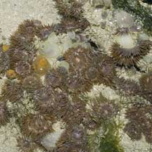
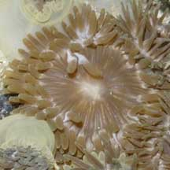
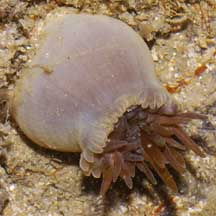

|
|
| sea anemones text index | photo index |
| Phylum Cnidaria > Class Anthozoa > Subclass Zoantharia/Hexacorallia > Order Actiniaria |
| Posy
anemone Mesactinia ganensis* Family Actiniidae updated Dec 2024 Where seen? This anemone is sometimes seen in small groups on coral rubble on our Northern and Southern shores. On Pulau Sekudu, they are sometimes seen in large numbers carpeting the ground. Elsewhere, they are seen alone or in smaller numbers. Features: Diameter with tentacles extended 3-4cm. Many short tentacles reddish brown, paler at the base. Tentacle tips may be slightly bulbous. Oral disk large relative to the tentacles, same colour as tentacles. Body column smooth and pale. Similar looking animals: Anemones listed for Singapore that can look like Posy anemones include Mesactinia ganensis and Isactinia citrina. Isactinia citrina can also look like Neon anemones. While White tipped corallimorphs can also look similar. Status and threats: There is inadequate information as at 2024 to make an informed assesment of its conservation status in Singapore. |
 Pulau Sekudu, Apr 06 |
 Pulau Sekudu, Apr 06 |
 Pulau Sekudu, Jul 04 |
*Species are difficult to positively identify without close examination.
On this website, they are grouped by external features for convenience of display.
| Posy anemones on Singapore shores |
On wildsingapore
flickr
|
| Other sightings on Singapore shores |
References
|